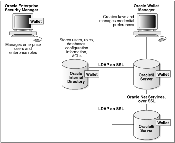

Uwierzytelnianie oparte na wiedzy weryfikuje tożsamość osoby w oparciu o odpowiedź na pytanie bezpieczeństwa. Pytania te są zaprojektowane w sposób który jest prosty dla osoby posiadającej konto, ale trudne dla każdego innego
Przykładowymi pytaniami są "Ile masz zwierząt?" lub "Kto był twoim ulubionym nauczycielem?" Wadami tego rozwiązania są: 1. Łatwy dostęp do konta dla osoby trzeciej znającej blisko właściciela konta 2. Teoretyczne zabezpieczenie wymagające właściwej wielkości znaków odpowiedzi 3. Łatwość w "rozgryzieniu" odpowiedzi dzięki mediom społecznościowym 4. Zawodna pamięć użytkownika Zaletą tego rozwiązania jest prosta implementacja
Jednym ze sposobów zabezpieczenia przy użyciu tej metody jest ograniczenie możliwych prób oraz wymaganie odpowiedzi w danym przedziale czasu
Tą metodę weryfikacji użytkownika do tej pory w pewnym zakresie stosują banki w próbach odzyskania dostępu do konta przez infolinię, gdzie ostateczną decyzję o potwiedzeniu statusu osoby na podstawie udzielonych informacji podejmuje człowiek.
W oparciu o podstawowe założenia tej metody osoba chcąca zyskać nieautoryzowany dostęp do konta jest wstanie przeprowadzić atak słownikowy jak zostało to pokazane w serialu "Mr. Robot" Link do wspomnianego fragmentu serialu
Wspomnianą wcześniej wadą tego sposobu autoryzacji była zawodna pamięć użytkownika. Właściciel konta może utracić dostęp do konta w wypadku gdy jego podpowiedź na pytanie"Ile masz zwierząt?" poda odpowiedź "TsZy" w takiej sytacji użytkownik chcąc przechytrzyć włamywacza uniemożliwi sobie odzyskanie dostępu do konta.
Uwierzytelnianie dwuskładnikowe wymaga od klienta wprowadzenia kodu przesłanego przez zewnętrzne medium takie jak poczta email lub wiadomość SMS Ta metoda weryfikacji jest powszechna, a sam proces weryfikacji powszechny oraz prosty do zrozumienia dla konsumenta
Uwierzytelnianie tego typu wymaga od użytkownika podania formy identyfikacji osobistej takiej takiej jak token oprócz zwykłej nazwy użytkownika Takim tokenem powinno być coś co użytkownik zapamiętał (czasem związane z metodą Knowledge-based) lub jest w jego posiadaniu (przykładowo kod uzyskany od agencji Uwierzytelniającej)
Dwuskładnikowe uwierzytelnianie jest szczególnie przydatne przy tworzeniu kont i resetowaniu haseł. Konieczność posiadania tokenu stanowi silny czynnik zniechęcający do oszustw
Choć uwierzytelnianie dwuskładnikowe wydaje się być skutecznym sposobem autoryzacji dostępu do konta lub usługi jest obarczone ryzykiem kradzieży konta w przypadku gdy do autoryzacji wykorzystuje się tylko jedno urządzenie W wypadku gdy oszust ma dostęp do podglądu ekranu może w łatwy sposób zyskać nie autoryzowany dostęp do konta lub usługi przykład takiego zajścia
Jednym z lepszych rozwiązań bezpieczeństwa użycia autoryzacji dwuskładnikowej jest aplikacja "Authenticator" firmy google
Metody weryfikacji oparte o bazy danych wykorzystują dane z różnych źródeł w celu weryfikacji czyjejś toższamości. Zazwyczaj stosowane są do oceny poziomu ryzyka jakie stwarza użytkownik, ponieważ znacznie ograniczają potrzebę ręcznej weryfikacji.
Najistotniejszą wadą tych metod jest to, że nie dają one pewności że osoba posiadające informacje jest osobą przeprowadzającą transakcję, głownie ze względu na rozpowszechnienie fałszywych tożsamości w internecie
Częściowo tą metodę stosuje serwis Youtube w celu weryfikacji wieku użytkownika, jednak błędnym założeniem jest stwierdzenie że komunikuje się z serwerami rządowymi w celu określenia tożsamości W wypadku weryfikacji wieku przy użyciu karty kredytowej Youtube zakłada że osoba jest pełnoletnia na podstawie dyrektywy avmsd
Schemat weryfikacji bazą danych firmy Oracle
Weryfikacja online wykorzystuje techniki pozwalające określić, czy wydany identyfikator odnosi się do użytkownika (w tym sztuczną inteligencję, widzenie komputerowe i ocenę ludzką) Ta medota weryfikacji zazwyczaj wymaga od użytkowników przekazania zdjęcia siebie trzymającego identyfikator co daje pewnośc że osoba na identyfikatorze jest tą samą osoba która go posiada.
Weryfikacja online jest bezpieczna, jednak użytkownicy uważają że przesłanie zdjęcia swojej twarzy i dowodu tożsamości jest niewygodne i natrętne.
Biometria może być wykorzystywana do indentyfikacji i Uwierzytelniania osób na podstawie cech fizycznych. Biometria opiera się na założeniu że szereg cech fizycznych jest unikalny dla każdego użytkownika.
Techniki biometryczne: Rozpoznawanie twarzy Rozpoznawanie głosu Skanowanie tęczówki Pobieranie odcisku palca
Wcześniej wymienione metody oferują wysoki poziom wygody dla klientów (zakładając wcześniejszą konfigurację), ponieważ wykluczają potrzebę pamiętania haseł, odpowiadania na pytania, itp.
Jednak biometria posiada szereg wad. Biometria może zostać skradziona. Zdjęcia z portali społecznościowych mogą zostać wykorzystane do weryfikacji, głos może zostać nagrany, bazy danych zhakowane w celu pobrania odcisków palca. Dodatkowo rozwijająca się sztuczna inteligencja (dostępna nawet na licencji opensource) może posłuzyć do stworzenia idealnej kopii biometrycznej człowieka
Przykłady użycia sztucznej inteligencji w odtwarzaniu biometrii: głosu twarzy
W okolicach roku 2015 doszło do incydentu kradzieży odcisku palca ze zdjęcia Ursuli vor der Layer